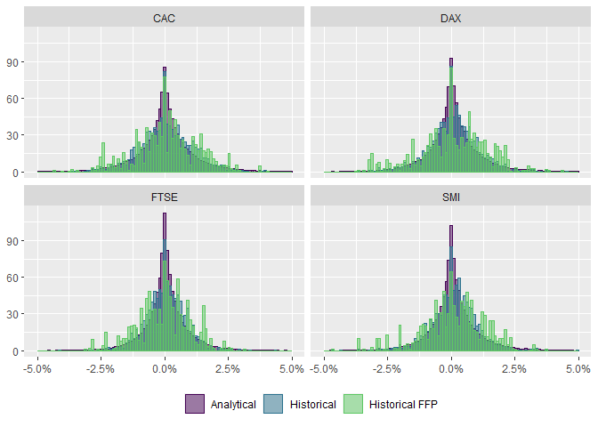

The goal of uncover is to help users to perform the second step in Meucci’s Checklist: Estimation.
Installation
You can install the development version of uncover from GitHub with:
# install.packages("devtools")
devtools::install_github("Reckziegel/uncover")Usage
From The Prayer:
“…the estimation step is the process of fitting a distribution to both, the observed past realizations of the invariants, and (optionally) additional information that is available at the current time
…”
In uncover the “market” distribution can be estimated from historical scenarios or through the analytical approach.
This brief introduction presents both.
# set up
library(tidyverse)
library(uncover)
library(ffp)
set.seed(123)
# invariants
x <- as_tibble(diff(log(EuStockMarkets)))
x
#> # A tibble: 1,859 x 4
#> DAX SMI CAC FTSE
#> <dbl> <dbl> <dbl> <dbl>
#> 1 -0.00933 0.00618 -0.0127 0.00677
#> 2 -0.00442 -0.00588 -0.0187 -0.00489
#> 3 0.00900 0.00327 -0.00578 0.00903
#> 4 -0.00178 0.00148 0.00874 0.00577
#> 5 -0.00468 -0.00893 -0.00512 -0.00723
#> 6 0.0124 0.00674 0.0117 0.00852
#> 7 0.00576 0.0122 0.0131 0.00821
#> 8 -0.00287 -0.00359 -0.00194 0.000837
#> 9 0.00635 0.0110 0.000171 -0.00523
#> 10 0.00118 0.00436 0.00313 0.0140
#> # ... with 1,849 more rowsAnalytical Solution
Start with reveal to figure out which distribution presents the “best” in-sample fit according to the AIC criteria:
reveal(x)
#> Currently fitting: asymmetric ghyp
#> Currently fitting: asymmetric hyp
#> Currently fitting: asymmetric NIG
#> Currently fitting: asymmetric VG
#> Currently fitting: asymmetric t
#> Currently fitting: symmetric ghyp
#> Currently fitting: symmetric hyp
#> Currently fitting: symmetric NIG
#> Currently fitting: symmetric VG
#> Currently fitting: symmetric t
#> Currently fitting: gauss
#> # A tibble: 11 x 8
#> model symmetric lambda alpha.bar aic llh converged n.iter
#> <chr> <lgl> <dbl> <dbl> <dbl> <dbl> <lgl> <dbl>
#> 1 ghyp FALSE 0.655 4.29e-14 -56177. 28108. TRUE 39
#> 2 ghyp TRUE 0.654 4.35e-13 -55847. 27940. TRUE 39
#> 3 VG FALSE 0.655 0 -54375. 27207. TRUE 23
#> 4 VG TRUE 0.654 0 -54369. 27200. TRUE 24
#> 5 hyp TRUE 2.5 2.58e- 7 -52721. 26375. TRUE 9
#> 6 hyp FALSE 2.5 9.00e- 8 -52715. 26376. TRUE 18
#> 7 t TRUE -3.08 0 -52711. 26371. TRUE 63
#> 8 t FALSE -3.10 0 -52711. 26375. TRUE 64
#> 9 NIG FALSE -0.5 1.87e+ 0 -52708. 26373. TRUE 37
#> 10 NIG TRUE -0.5 1.85e+ 0 -52708. 26369. TRUE 36
#> 11 gauss TRUE NA Inf -52096. 26062. TRUE 0In the current sample, the asymmetric Generalized Hyperbolic Distribution (GHD) fits best. To model the GHP use fit_ghp:
fit <- fit_ghd(x)
fit
#> <list_of<double>[21]>
#> Converged: TRUE
#> Dimension: 4
#> AIC: -56176.6
#> Log-Likelihood: 28108.3
#> Model: Asymmetric Generalized HyperbolicThe family of functions fit_*() is available for different distribution specifications, which include:
-
fit_ghd: for the generalized hyperbolic distribution -
fit_hyp: for the hyperbolic distribution -
fit_nig: for the generalized inverse gaussian distribution -
fit_vg: for the variance gamma distribution -
fit_t: for the student-t distribution -
fit_normal: for the normal distribution
Once a target distribution is chosen, the randomness of the “market” can be simulated in a large panel with simulate_margins:
dist <- simulate_margins(model = fit, n = 100000)
dist
#> # A tibble: 100,000 x 4
#> DAX SMI CAC FTSE
#> <dbl> <dbl> <dbl> <dbl>
#> 1 -0.00717 -0.000851 -0.00185 -0.00259
#> 2 -0.00175 0.0117 -0.00482 0.00462
#> 3 0.0198 0.0122 0.00129 0.00694
#> 4 0.000638 0.000309 -0.00156 -0.00419
#> 5 0.00144 0.00353 -0.00389 -0.00643
#> 6 0.00310 0.00352 0.00259 0.00270
#> 7 0.00306 0.00232 0.00420 0.00538
#> 8 -0.00744 -0.00256 -0.00542 0.00260
#> 9 -0.00108 0.000283 -0.000678 -0.000816
#> 10 -0.00360 -0.0172 0.00541 -0.00429
#> # ... with 99,990 more rowsHistorical Scenarios
Historical scenarios play nice with the Fully Flexible Probabilities. Bootstrapping can be done very quickly in this approach:
# prior probabilities
p <- rep(1 / nrow(x), nrow(x))
boot <- bootstrap_scenarios(x = x, p = as_ffp(p), n = 100000)
boot
#> # A tibble: 100,000 x 4
#> DAX SMI CAC FTSE
#> <dbl> <dbl> <dbl> <dbl>
#> 1 -0.00448 -0.0138 -0.0207 -0.00926
#> 2 0.00457 0.00214 0.00527 0.00504
#> 3 -0.00378 -0.00551 -0.00924 -0.0116
#> 4 0.00351 0.0000394 -0.00527 0.000658
#> 5 0.00184 0.00225 -0.00184 0.00248
#> 6 0.00628 -0.00196 -0.000157 0
#> 7 0.00341 0.00778 -0.00483 0.00149
#> 8 -0.0253 -0.0138 -0.0296 -0.0121
#> 9 -0.00485 0.00615 -0.000777 0.000958
#> 10 -0.000286 -0.00563 0.0000895 -0.00227
#> # ... with 99,990 more rowsTo “twick” the probability vector, use any of the functions avaiable in the ffp package.
Here, probabilities are modeled as an exponential decay, in order to give more importance to recent events:
# Exponential Smoothing
probs <- exp_decay(x = x, lambda = 0.01)
boot_decay <- bootstrap_scenarios(x = x, p = probs, n = 100000)
boot_decay
#> # A tibble: 100,000 x 4
#> DAX SMI CAC FTSE
#> <dbl> <dbl> <dbl> <dbl>
#> 1 -0.000907 0.00113 -0.00202 0.00678
#> 2 0 0 0 -0.00560
#> 3 0.00738 -0.00374 -0.000622 -0.00135
#> 4 -0.0156 0.0000127 -0.0106 -0.00888
#> 5 0.00686 0.00940 0.0153 0.00496
#> 6 0.000395 -0.00426 -0.00162 -0.00409
#> 7 0.00406 0.00380 0.0173 0.00539
#> 8 0.00819 -0.00341 0.0174 0.00857
#> 9 0.00440 -0.00835 0.00159 -0.00540
#> 10 -0.0156 0.0000127 -0.0106 -0.00888
#> # ... with 99,990 more rowsFor more details on flexible probabilities, please, refer to the ffp package and the papers bellow:
Estimation Risk
From now on the “estimation risk” takes place which will have an impact on the entire Checklist.
dist_tidy <- dist |>
pivot_longer(cols = everything()) |>
add_column(Type = "Analytical")
boot_tidy <- boot |>
pivot_longer(cols = everything()) |>
add_column(Type = "Historical")
exp_tidy <- boot_decay |>
pivot_longer(cols = everything()) |>
add_column(Type = "Historical FFP")
# plot
bind_rows(dist_tidy, boot_tidy, exp_tidy) |>
ggplot(aes(x = value, y = ..density.., color = Type, fill = Type)) +
geom_histogram(position = "identity", alpha = 0.5, bins = 100) +
facet_wrap(~name) +
scale_color_viridis_d(end = 0.75) +
scale_fill_viridis_d(end = 0.75) +
scale_x_continuous(labels = scales::percent_format(), limits = c(-0.05, 0.05)) +
labs(x = NULL, y = NULL, color = NULL, fill = NULL) +
theme(legend.position = "bottom")
Reference
- Meucci, Attilio, ‘The Prayer’ Ten-Step Checklist for Advanced Risk and Portfolio Management (February 2, 2011). Available at SSRN: https://ssrn.com/abstract=1753788 or http://dx.doi.org/10.2139/ssrn.1753788